Piston: Service and Repair
11 25 530 - Removing and installing/replacing all pistons (N52K)

Special tools required:
- 00 9 120 00 9 120 Torque Angle Measuring Dial
- 11 4 491
- 11 4 492
- 11 4 493
- 11 4 494
- 11 6 241
- 11 6 261
- 11 8 330 11 8 330 Insertion Tool

Warning!
Danger of injury!
Carry out work on piston pin circlip wearing protective goggles only.

Important!
If piston, connecting rod, big end bearing cap and connecting rod bearing shell are to be reused, they must be installed in the same position.
Individual replacement of a connecting rod is not permitted. Connecting rods are classified by weight categories and are only available as a set for all cylinders.
Connecting rod and big end bearing cap are marked with identical pairing letters and must not be mixed up.
Danger of engine damage!
Piston and piston pins are paired and must not be fitted individually.

Necessary preliminary tasks:
- Remove engine Removing and Installing Engine
- Mount engine on assembly stand 11 00 ... Mounting Engine on Assembly Stand
- Remove intake air manifold Service and Repair
- Remove cylinder head Removal and Replacement.
- Remove oil sump Service and Repair
- Remove oil pump 11 41 000 Removing and Installing/Replacing Oil Pump
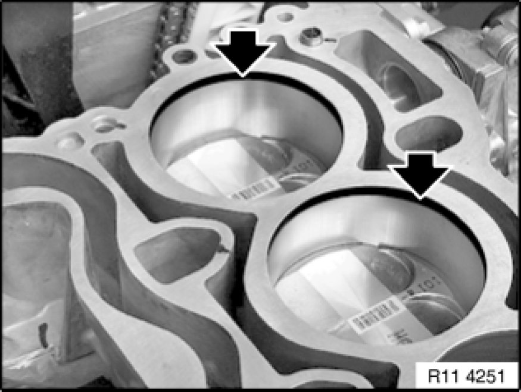
Note:
Carefully remove heavy oil carbon residues from the cylinder wall (arrow).
Important!
Do not use any metal-cutting tools.
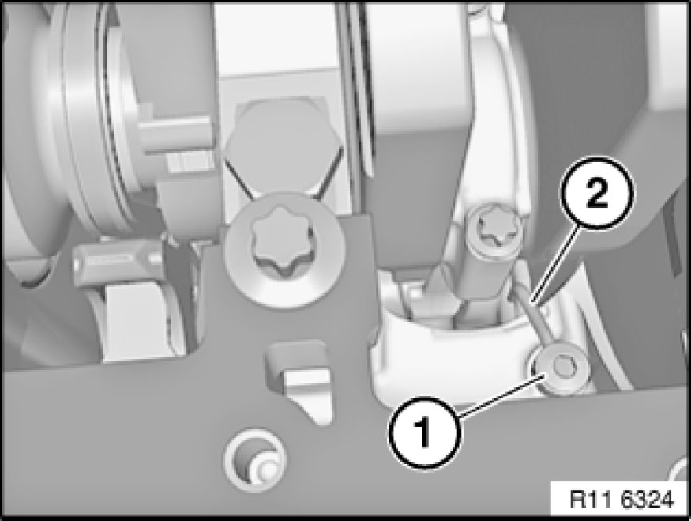
Important!
Oil spray nozzle (2) must not be maladjusted or bent.
Risk of damage!
Do not release screw (1) of oil spray nozzle (2).
If necessary, readjust oil spray nozzle Service and Repair(2).
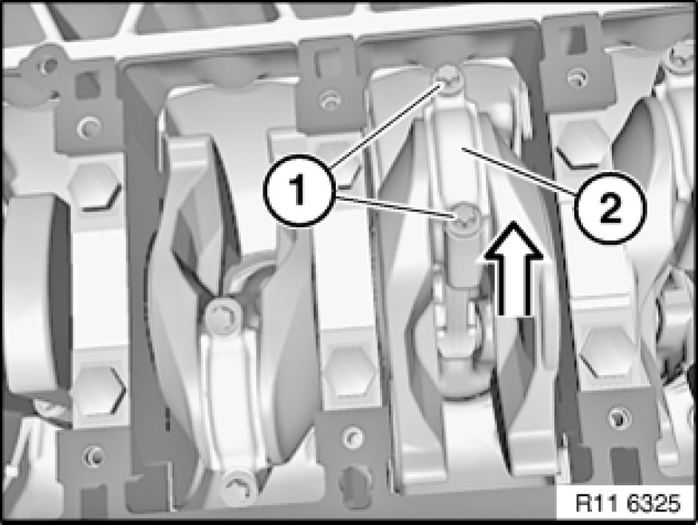
Release conrod bolts (1).
Tightening torque 11 24 1AZ. Mechanical Specifications
Installation Note:
Replace screws.
Remove conrod bearing cap (2) in direction of arrow.
Important!
Connecting rod and big end bearing cap (2) are marked with identical pairing letters and must not be mixed up.
Danger of engine damage!
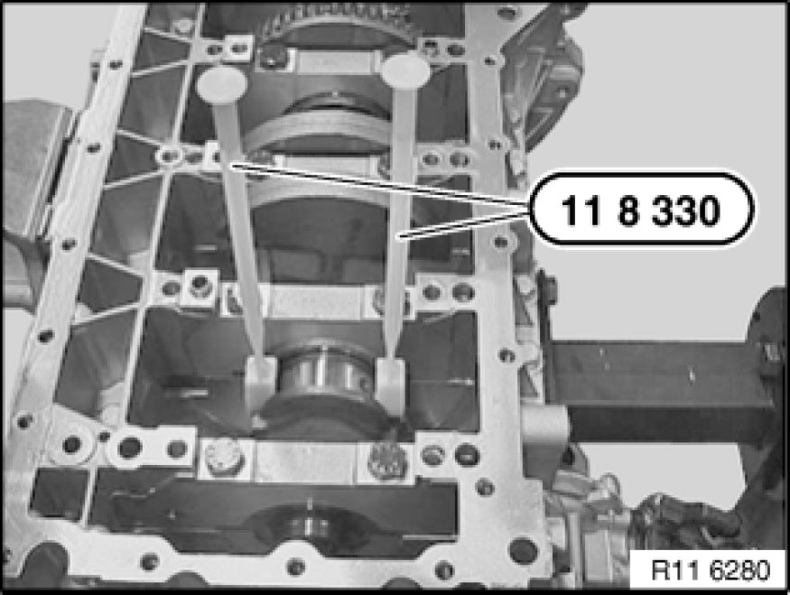
Attach special tool 11 8 330 11 8 330 Insertion Tool to connecting rod.
Press out connecting rod and piston with special tool 11 8 330 11 8 330 Insertion Tool to cylinder head side.
Note:
Special tool 11 8 330 11 8 330 Insertion Tool simultaneously serves to prevent connecting rod and piston from falling down.
Important!
Do not touch the oil spray nozzle when removing the components.
Risk of damage!
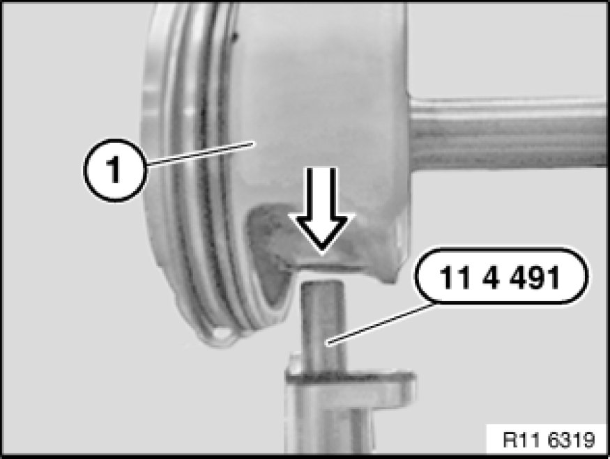
Preliminary work:
Clamp special tool 11 4 491 in vice.
Secure piston (1) with connecting rod to special tool 11 4 491.
Warning!
Danger of injury!
Carry out work on piston pin circlip wearing protective goggles only.
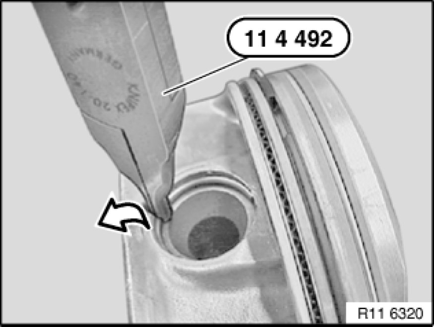
Warning!
Protective goggles must be worn.
Lever out piston pin circlip with special tool 11 4 492 in direction of arrow.
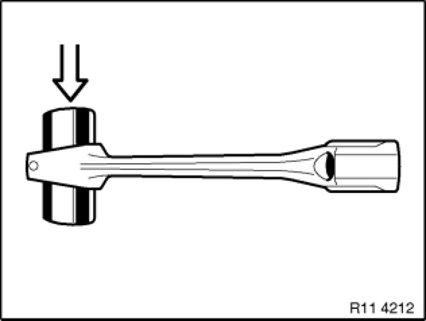
If necessary, replace connecting rods.
Important!
Individual replacement of a connecting rod is not permitted. Connecting rods are classified by weight categories and are only available as a set for all cylinders.
Existing and new connecting rods must not be installed in mixed combinations.
Installation Note:
It must be possible for the piston pin to be pressed with minimal force by hand through the small end bushing. There must be no noticeable play.
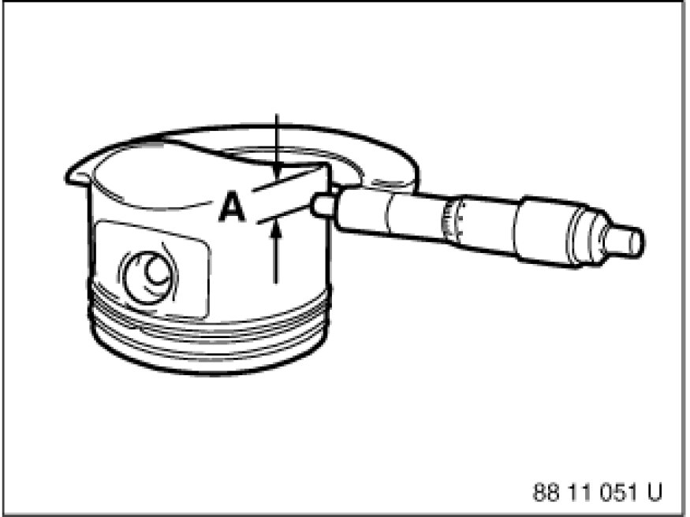
Measure piston installation clearance:
Measure piston diameter with micrometer at measuring point "A" from lower edge of piston and offset by 90° to piston pin axis.
Piston diameter at measuring point "A".
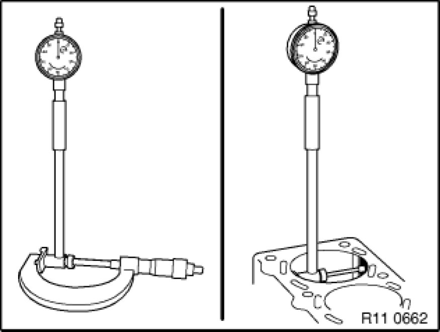
Adjust micrometer to cylinder bore of crankcase. Set internal caliper on micrometer to "zero". Measure bottom, centre and top of cylinder bore in direction of travel and direction of engine rotation.
Diameter of cylinder bore.
Piston installation clearance.
Total permissible wear tolerance.
If necessary, replace piston.
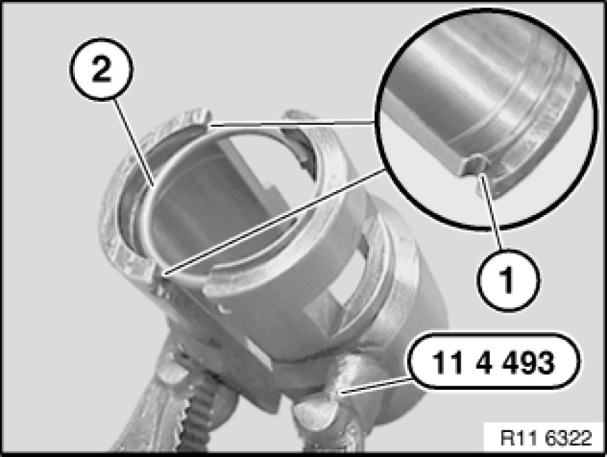
Warning!
Protective goggles must be worn.
Insert piston pin circlip (2) into groove (1) of special tool 11 4 493.
Move piston pin circlip (2) into installation position.
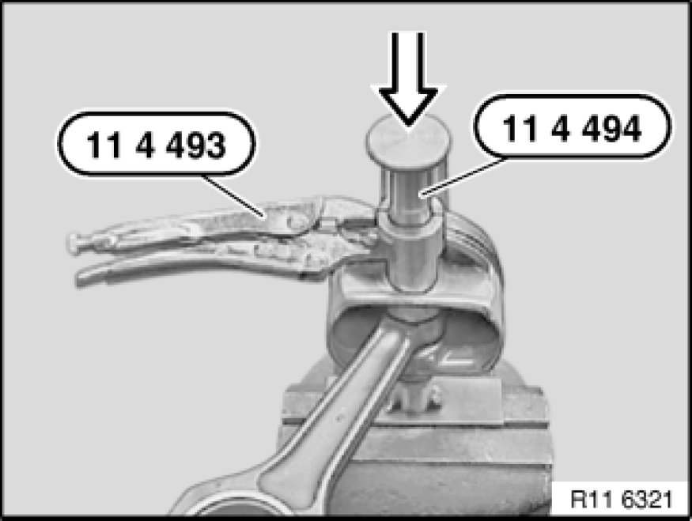
Warning!
Protective goggles must be worn.
Guide lug and cutout on special tool 11 4 493 must point to piston crown. Only then can special tool 11 4 494 be correctly fitted.
When special tools 11 4 493 and 11 4 494 are correctly positioned, the piston pin circlip must be driven in with a plastic hammer in the direction of the arrow.
Note:
For vehicles with B30 engines.
Install all piston rings Service and Repair.
Install all connecting rod bearing shells Service and Repair.
Coat piston (2) and piston rings with oil.
Pre-install piston (2) in special tool 11 6 261 11 6 260 Mounting Sleeves with Case.
Attach special tool 11 8 330 11 8 330 Insertion Tool to connecting rod (1).
Installation Note:
Check protective lugs on special tool 11 8 330 11 8 330 Insertion Tool for correct position and damage.
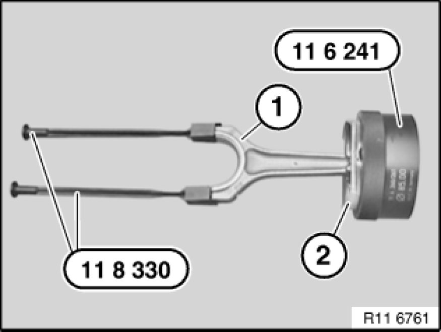
Note:
For vehicles with B25 engines.
Install all piston rings Service and Repair.
Install all connecting rod bearing shells Service and Repair.
Coat piston (2) and piston rings with oil.
Pre-install piston (2) in special tool 11 6 241.
Attach special tool 11 8 330 11 8 330 Insertion Tool to connecting rod (1).
Installation Note:
Check protective lugs on special tool 11 8 330 11 8 330 Insertion Tool for correct position and damage.
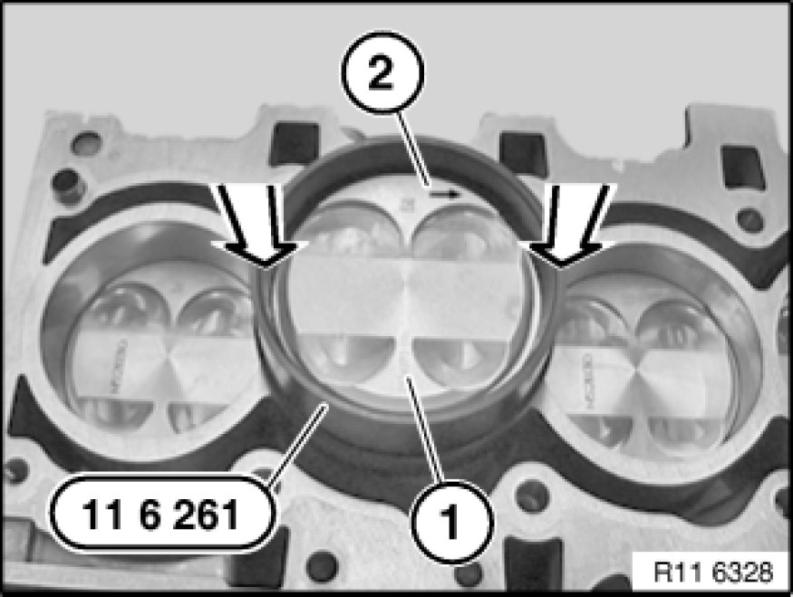
Insert piston (1) with connecting rod in cylinder.
Important!
Do not touch the oil spray nozzle when installing the components.
Risk of damage!
Danger of piston ring failure.
Press in piston (1) at marked points (see arrows) with finger pressure only, do not drive in.
Insert piston (1) so that arrow (2) on piston crown points to camshaft drive.
Press in piston (1) with special tools 11 6 261 11 6 260 Mounting Sleeves with Case / 11 6 241.
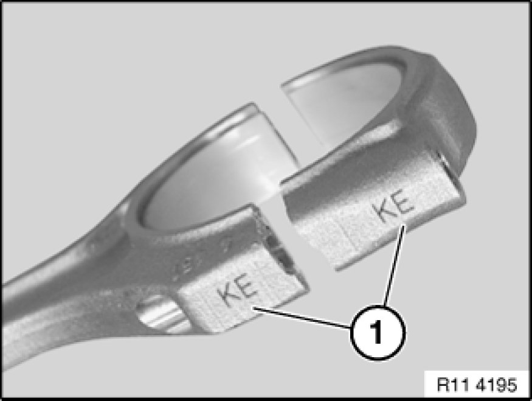
Important!
Connecting rod and big end bearing cap are marked with identical pairing letters (1) and must not be mixed up.
Mixing them up or incorrectly fitting the big end bearing cap on the connecting rod will result in engine damage.
Apply a light coat of oil to connecting rod bearing journal.
Join connecting rod and connecting rod bearing journal.
Detach special tool 11 8 330 11 8 330 Insertion Tool.
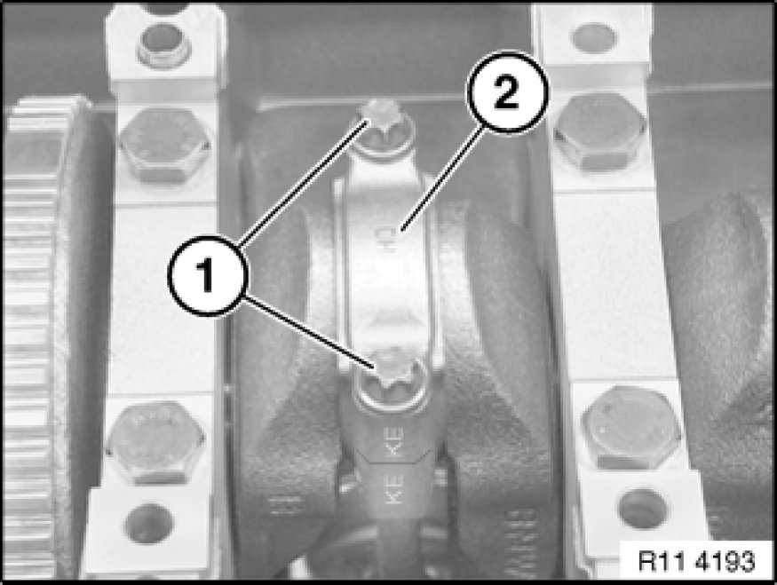
Fit conrod bearing caps (2) so that pairing letters match up.
Installation Note:
Replace screws.
Install new conrod bolts (1).
Important!
Jointing torque and angle of rotation must be observed without fail.
Risk of damage!
Tightening torque 11 24 1AZ. Mechanical Specifications
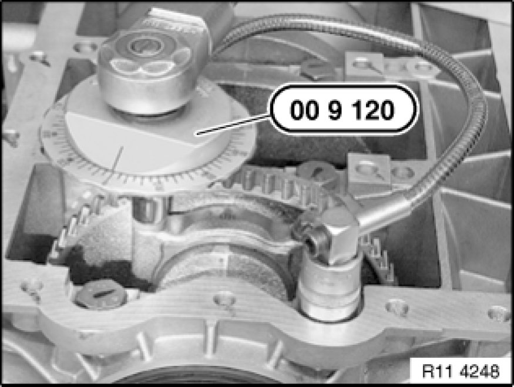
If necessary, tighten connecting rod bolts to torsion angle with special tool 00 9 120.
Tightening torque 11 24 1AZ. Mechanical Specifications

Assemble engine.